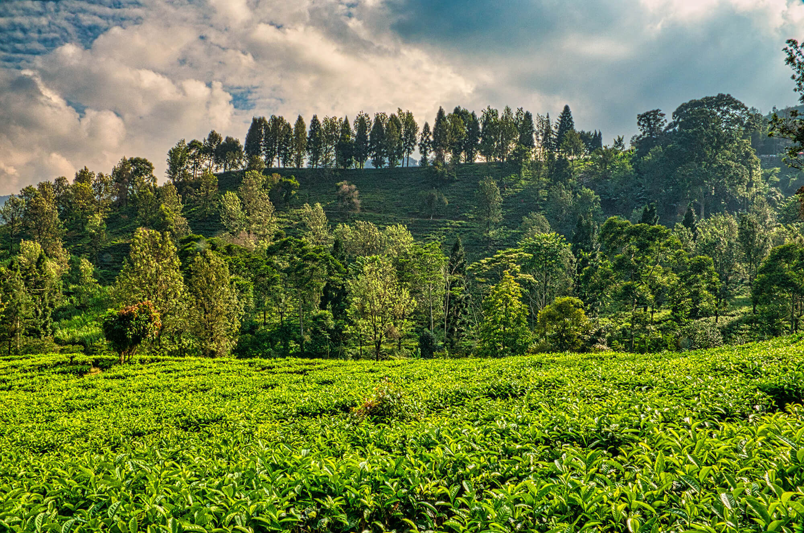
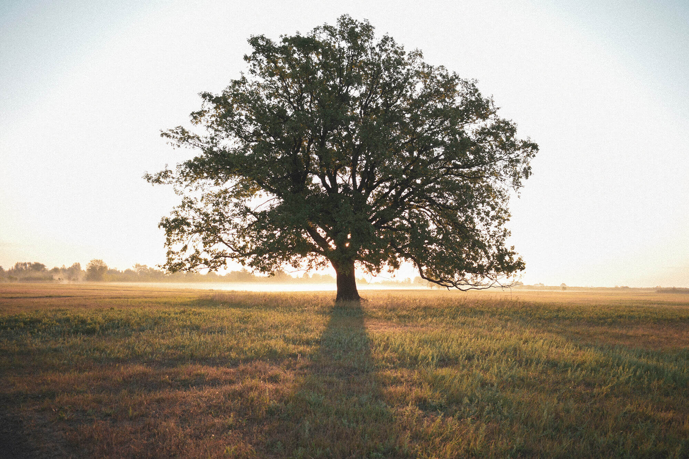
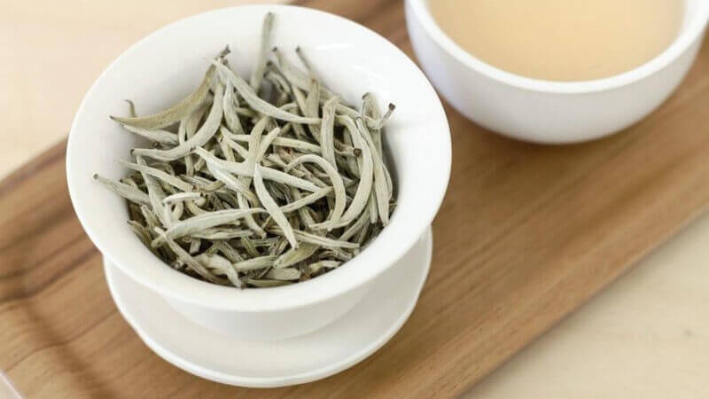
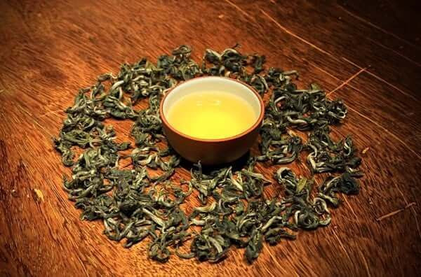
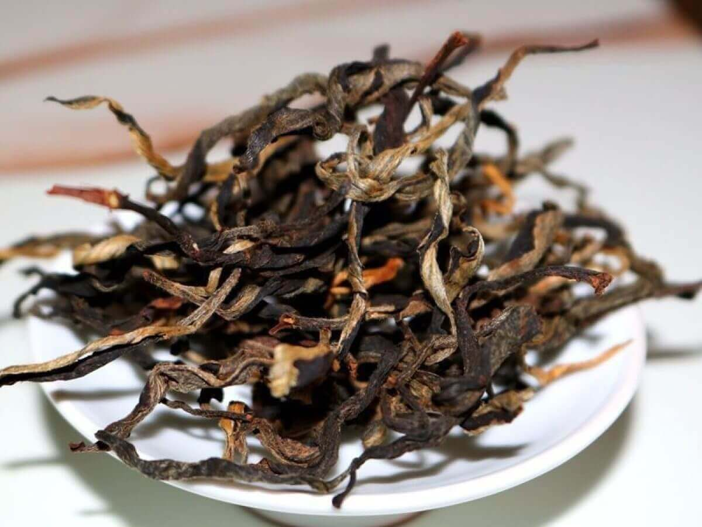
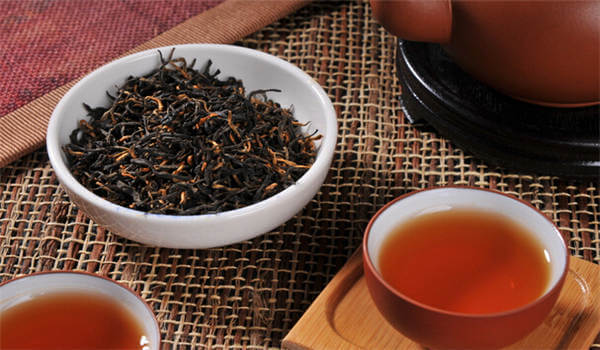
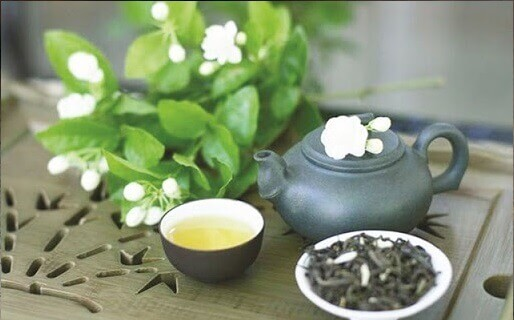
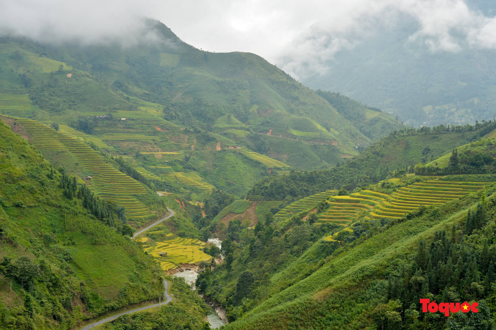
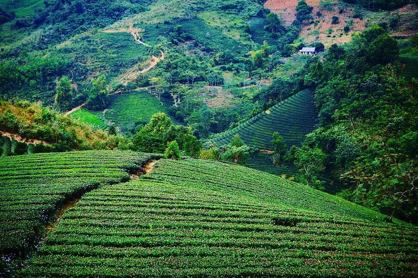

bancha.vn
Trà già bancha 3 năm
bancha.vn
Trà già bancha 3 năm
Chè Shan tuyết là loại chè đặc biệt ngon, có mùi thơm dịu, vị ngọt thanh. Nó trông có màu vàng trong cốc và được yêu thích bởi những người thực sự biết và đánh giá cao trà.
Trà Shan Tuyết là một loại trà đặc biệt có nguồn gốc từ các tỉnh phía Bắc, Việt Nam. Trà Shan Tuyết có vị rất ngon và có mùi thơm. Nó cũng có chất lượng rất cao và mọi người trên khắp thế giới thực sự thích nó.
Chè Shan tuyết được sản xuất từ những cây chè đặc sản mọc ở một vùng nhất định. Lá trà có màu xanh đậm và gầy. Điều này làm cho trà có hương vị đặc biệt và ngon.
Trà Shan Tuyết được làm theo cách đặc biệt bằng các phương pháp cũ như khuấy, để yên và sấy khô cẩn thận. Điều này giúp trà giữ được hương vị thơm ngon, màu sắc đẹp và chất lượng cao.
Kết hợp trà bancha shan tuyết với tương tamari hoặc miso có thể mang lại những lợi ích và công dụng sau:
Lưu ý: Khi kết hợp trà bancha shan tuyết với tương tamari hoặc miso, hãy thử và điều chỉnh tỷ lệ và mức độ sử dụng sao cho phù hợp với khẩu vị và sở thích cá nhân.
Những cây chè Shan Tuyết được coi là cổ thụ có lịch sử phát triển lâu đời trên vùng đất này, kéo dài hơn một thế kỷ và thường trên 100 năm tuổi.
Chè Shan Tuyết Cổ Thụ nổi tiếng với hương vị độc đáo và chất lượng tuyệt hảo, có được là nhờ những lá chè cổ thụ. Những chiếc lá này đã được chăm sóc tỉ mỉ trong nhiều năm, tạo nên hương vị phong phú và đặc biệt, với mùi thơm rất dễ nhận biết. Hơn nữa, những lá trà cổ thụ này chứa hàm lượng tannin thấp hơn so với các loại trà thông thường, khiến chúng trở thành lựa chọn lành mạnh hơn cho những người đam mê trà.
Nhìn chung, chè Shan tuyết Cổ Thụ nổi bật giữa các loại chè khác nhờ hương vị và chất lượng đặc biệt, điều này minh chứng cho chuyên môn và tâm huyết của những người làm chè chăm bón nó.
Quy trình sản xuất chè Shan tuyết Cổ Thụ thường được thực hiện bằng các kỹ thuật truyền thống như đảo trộn, lên men và sấy khô. Những phương pháp này đã được sử dụng để duy trì hương vị đặc biệt và chất lượng vượt trội của lá trà đã được sử dụng trong nhiều thế kỷ.
Chè Shan Tuyết Cổ Thụ là loại chè có chất lượng hảo hạng, hương vị riêng biệt, tinh túy, được những người đam mê chè cũng như các chuyên gia đánh giá cao. Thưởng thức một tách trà này cũng là cơ hội để tìm hiểu sâu hơn về văn hóa trà độc đáo của vùng núi cao Việt Nam, tạo nên một trải nghiệm uống trà thực sự đặc biệt.
Chuẩn bị nguyên liệu:
Làm sạch bình lọc trà: Đảm bảo bình lọc trà sạch sẽ bằng cách rửa với nước ấm.
Đặt trà vào bình lọc trà: Đặt 1-2 muỗng trà Shan Tuyết vào bình lọc trà. Số lượng muỗng trà có thể điều chỉnh theo khẩu vị cá nhân và độ mạnh yêu thích của bạn.
Hâm nóng bình lọc trà: Rót một ít nước nóng vào bình lọc trà để làm ướt lá trà và hâm nóng bình lọc trong khoảng 10-15 giây. (Đổ nước này đi sau đó)
Pha trà: Đổ nước nóng vào bình lọc trà chứa lá trà Shan Tuyết. Lượng nước có thể điều chỉnh tùy theo khẩu vị, nhưng thường là khoảng 200-250ml cho mỗi ly trà.
Thời gian ngâm: Để trà Shan tuyết ngon nhất, bạn cần cho trà vào nước nóng từ 3-5 phút. Bạn có thể thay đổi thời gian bạn để nó tùy thuộc vào khẩu vị cá nhân.
Thưởng thức: Sau khi ngâm trà trong thời gian nhất định, lấy bình lọc trà ra khỏi ly trà. Bạn có thể thêm đường hoặc mật ong nếu muốn. Thưởng thức trà Shan Tuyết nóng hoặc đá tùy ý.
Lưu ý: Khi pha chè Shan tuyết, dùng nước quá nóng có thể làm chè mất đi phần nào vị ngon. Vì vậy, điều quan trọng là sử dụng nước có nhiệt độ phù hợp để trà có hương vị ngon nhất!
Trên thị trường, có một số loại trà Shan Tuyết đặc biệt và phổ biến. Dưới đây là một số loại trà Shan Tuyết được bán trên thị trường:
1. Bạch Trà Shan Tuyết: Được chế biến từ các lá chè trắng của cây chè Shan Tuyết. Trà Shan Tuyết Trắng có hương thơm nhẹ nhàng, vị tinh tế và màu sắc nhạt.
2. Lục Trà Shan Tuyết: Là loại trà chế biến từ lá chè xanh của cây chè Shan Tuyết. Trà Shan Tuyết Xanh thường có hương thơm tươi mát, vị ngọt nhẹ và màu xanh đậm.
3. Trà Shan Tuyết Đen: Được chế biến từ lá chè đã được lên men và oxy hóa. Trà Shan Tuyết Đen có hương thơm đặc trưng, vị đậm và màu đỏ nâu.
4. Hồng Trà Shan Tuyết: Là một loại trà đặc biệt được chế biến từ lá chè Shan Tuyết và có màu sắc đỏ nâu đặc trưng. Đây là sự kết hợp giữa chè Shan Tuyết và quy trình oxy hóa, tạo ra một loại trà có mùi hương thơm đặc trưng và vị ngọt đậm.
5. Trà Bancha Shan Tuyết: Đây là những loại trà Shan Tuyết đặc biệt được chọn lọc kỹ càng từ những cây chè cổ thụ có tuổi đời lâu trên 3 năm. Trà Bancha Shan Tuyết có hương vị phong phú, độ tannin thấp không ghây mất ngủ như các loại trà khác và mang trong mình những đặc điểm độc đáo của chè cổ thụ. Có giá trị sức khỏe rất cao mang lại vô số lợi ích cho cơ thể, chẳng hạn như thúc đẩy tiêu hóa và giải độc các chất có hại như rượu, thức ăn, độc tố và hóa chất. Hỗ trợ lọc máu, giảm mệt mỏi và căng thẳng đồng thời kích thích tiêu hóa và thúc đẩy tính kiềm.

6. Trà Shan Tuyết Hương Hoa: Là sự kết hợp giữa trà Shan Tuyết và các loại hoa như hoa cúc, hoa hồng, hoa nhài. Trà Shan Tuyết Hương Hoa có hương thơm đặc trưng và hòa quyện giữa vị trà và hương hoa.
Ẩn mình trong một vị trí đẹp như tranh vẽ ở độ cao khoảng 1.500m so với mực nước biển, Chè Bản Liền đã được thành lập như một thiên đường cho hơn 400 hộ gia đình người Tày sản xuất chè Shan tuyết hảo hạng.
Khí hậu thôn dã của Bản Liền, mát mẻ vĩnh viễn và thỉnh thoảng có sương mù dày đặc, tạo điều kiện hoàn hảo cho việc trồng chè Shan tuyết phát triển mạnh mẽ mà không cần bất kỳ phân bón nhân tạo nào.
Suối Giàng ở Yên Bái tự hào có loại chè Shan tuyết hảo hạng nhất nhì cả nước. Vùng chè này trải rộng trên diện tích rộng lớn 400 ha, thể hiện quy mô canh tác chè ấn tượng. Những cây chè khoe thân rộng vài người ôm, tán xanh mướt rộng hơn 20m2, điểm xuyết địa y mốc meo.
Tại đây, những búp chè Shan đâm chồi nảy lộc, to lớn vượt trội, chắc nịch, phủ một lớp lông trắng như nhung như nhung. Điều làm nên sự khác biệt của loại trà này là quá trình canh tác hoàn hảo, với quy trình thu hoạch hoàn toàn thủ công và phát triển tự nhiên, không có bất kỳ loại thuốc trừ sâu hay chất kích thích tăng trưởng nào.
Vì vậy, vùng này nổi tiếng là nơi sản xuất ra loại Trà Shan Tuyết Cổ Thụ tinh khiết nhất Việt Nam.
Trà Shan Tuyết tại Tủa Chùa sinh trưởng tự nhiên, không cần chăm bón vẫn tự lên xanh tốt. Tự duy trì màu xanh tươi tốt của mình, đã tồn tại qua nhiều thế kỷ, thích nghi với thổ nhưỡng và khí hậu địa phương để vượt qua mọi thách thức môi trường và đẩy lùi sâu bệnh.
Một lượng lớn trong số hơn, mỗi cây trên 300 tuổi. Được lựa chọn kỹ lưỡng từ những búp chè non còn ngậm sương sớm và vẫn đọng một lớp mỏng tuyết trắng.
Tà Xùa thường được ví như “cánh cổng trời” bởi sự hòa quyện tinh tế giữa đất trời và mây mù bao phủ. Độ cao tối ưu và khí hậu ôn hòa nhất quán khiến nơi đây trở thành môi trường hoàn hảo để trồng và nuôi dưỡng chè Shan tuyết.
Thưởng thức loại chè Shan Tuyết quý hiếm, mọc tự nhiên trong môi trường nguyên sơ không có bất kỳ tác nhân nhân tạo nào. Vùng đất Hà Giang có những cây chè trăm tuổi, trong đó có những cây chè cổ thụ hoang dã hơn 900 năm tuổi, cho ra hương vị độc đáo và tinh tế.
Với hương vị riêng biệt và đậm đà, Trà Shan tuyết nơi này chắc chắn sẽ làm hài lòng các giác quan của bạn và mang đến trải nghiệm sảng khoái và ổn định sau nhiều nước.
Bancha.vn tự hào là thương hiệu trà Bancha thượng hạng nổi tiếng tại Việt Nam, chuyên phục vụ khẩu vị sành điệu của những người sành trà với dòng sản phẩm trà Bancha Shan Tuyết hảo hạng.
Với mong muốn mang đến cho khách hàng những trải nghiệm thưởng trà đích thực và tuyệt vời, Bancha.vn đã nổi lên như một cái tên đáng tin cậy đối với những người sành trà cao cấp. Bancha.vn tận dụng nguồn tài nguyên trà phong phú của vùng Bancha thuần khiết, nơi có thời tiết và cảnh quan hài hòa giúp cây trà phát triển tối ưu.
Với sự chăm sóc tỉ mỉ và chế biến tinh tế, trà Shan tuyết của Bancha.vn mang hương vị đặc trưng và giá trị dinh dưỡng vượt trội. Bancha.vn chuyên cung cấp chè Bancha Shan Tuyết hảo hạng với quy trình thu hoạch và chế biến đạt tiêu chuẩn hoàn hảo. Sự tận tâm của chúng tôi nằm trong việc bảo tồn các thành phần tự nhiên của lá trà, tạo nên hương vị tinh tế, thuần khiết và tốt cho sức khỏe.
Trang web bancha.vn mang đến trải nghiệm mua sắm trực tuyến tinh vi và liền mạch, cho phép khách hàng dễ dàng tìm hiểu và đặt mua loại trà Bancha Shan Tuyết ưa thích của mình. Ngoài ra, bancha.vn còn cung cấp thông tin chi tiết toàn diện về nguồn gốc và quy trình chế biến chè, giúp khách hàng hiểu rõ hơn về sản phẩm mà mình đang mua.
Bancha.vn là sự lựa chọn hoàn hảo cho những người đam mê trà, coi trọng sự xuất sắc và tỉ mỉ, bởi sự nhấn mạnh không ngừng của chúng tôi vào việc cung cấp chất lượng và độ tin cậy vượt trội giúp chúng tôi nổi bật như một thương hiệu đáng tin cậy và được kính trọng trong thế giới chè Bancha Shan Tuyết.
Liên hệ đặt hàng ngay Trà Bancha Shan tuyết - Bancha.vn